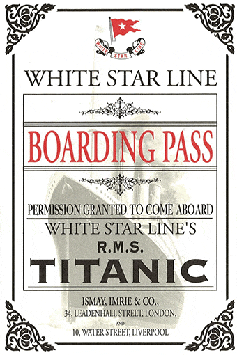

At 11.40pm on the night of 14 April 1912, on her maiden voyage from Southampton to New York, the RMS Titanic struck the iceberg that would ultimately lead to the sinking of the ship less than 3 hours later.